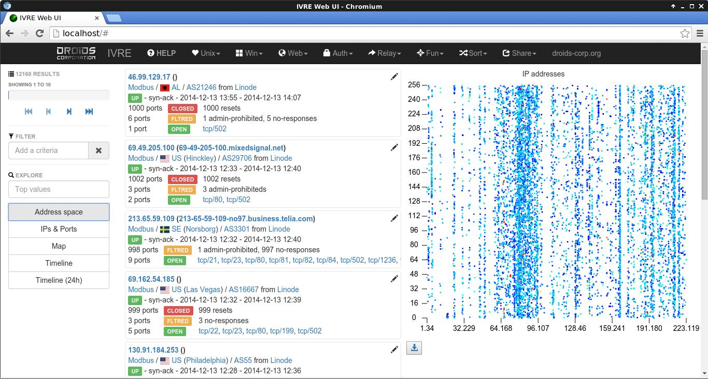
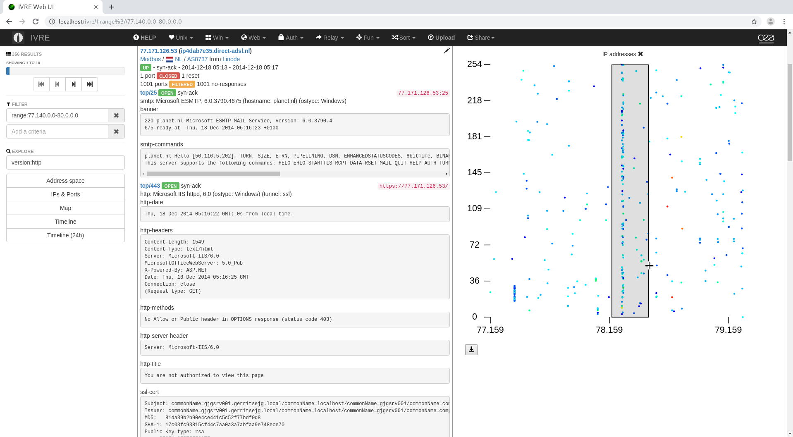
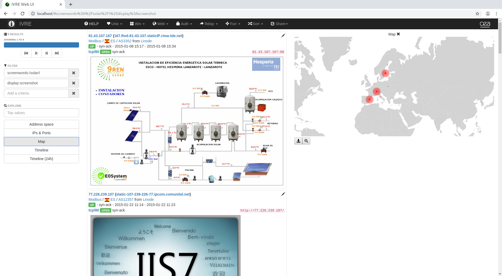
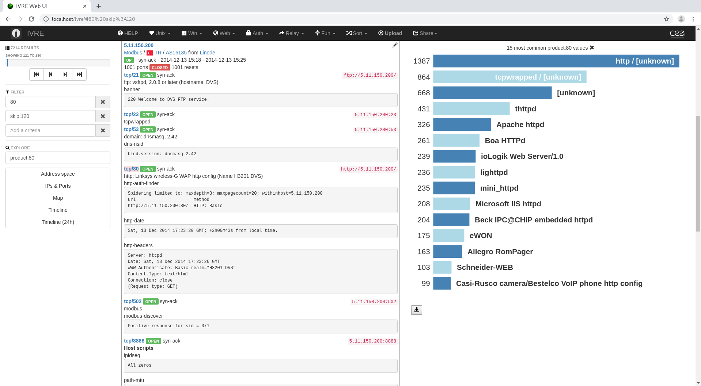
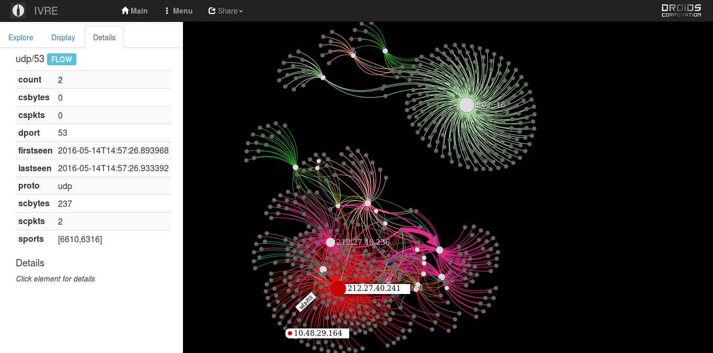

Screenshots gallery¶
Nmap results¶

Home page with “heatmap” IP addresses.

Scan result details, using the “heatmap” IP addresses to “zoom” in the address space

Screenshots containing the word “solar” and map

Most common products seen on port 80

Help tooltip and most common ENIP vendors
Flow analysis¶

DNS flows with halo to show connected nodes

Flows with details for a specific host

Flows with details for a specific flow

Flow map
Passive network analysis¶
A simple passive analysis demonstration
The data from the previous scene used to create an Nmap-like result